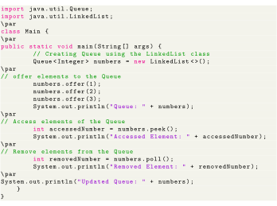
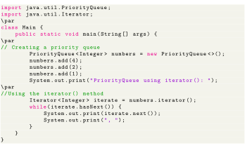

Next: Deque Interface Up: Implementation of the Queue Previous: Implementation of the Queue Contents

Output

Unlike normal queues, priority Queue elements are retrieved in sorted order. Suppose, we want to retrieve elements in the ascending order. In this case, the head of the priority queue will be the smallest element. Once this element is retrieved, the next smallest element will be the head of the queue. It is important to note that the elements of a priority queue may not be sorted. However, elements are always retrieved in sorted order.
Following code iterates each element in a priority Queue. To iterate over the elements of a priority queue, we can use the iterator() method. In order to use this method, we must import the java.util.Iterator package. For example,

Above code chunk produces PriorityQueue using iterator(): 1, 4, 2,